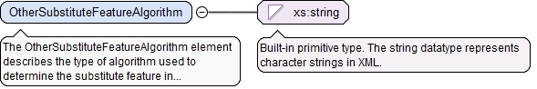

<xs:element name="SubstituteFeatureAlgorithmEnum" type="SubstituteFeatureAlgorithmEnumType"><xs:annotation><xs:documentation>The SubstituteFeatureAlgorithmEnum element describes an often-used type of algorithm used to determine the substitute feature.</xs:documentation></xs:annotation></xs:element>
The optional xId attribute is a reference to the id of a QIF object in an external document. A QIF object in an external QIF document can be referenced by using references to two QIF ids: the id of the external document reference of type ExternalQIFDocumentReferenceType found in the local document and the id of the object found in the external document.
Source
<xs:element name="SubstituteFeatureAlgorithmId" type="QIFReferenceType"><xs:annotation><xs:documentation>The SubstituteFeatureAlgorithmId element is the id of an algorithm definition.</xs:documentation></xs:annotation></xs:element>
The OtherSubstituteFeatureAlgorithm element describes the type of algorithm used to determine the substitute feature in natural language.
Diagram

Type
xs:string
Properties
content
simple
Source
<xs:element name="OtherSubstituteFeatureAlgorithm" type="xs:string"><xs:annotation><xs:documentation>The OtherSubstituteFeatureAlgorithm element describes the type of algorithm used to determine the substitute feature in natural language.</xs:documentation></xs:annotation></xs:element>
<xs:complexType name="SubstituteFeatureAlgorithmType"><xs:annotation><xs:documentation>The SubstituteFeatureAlgorithmType defines the type of algorithm used to determine the substitute feature</xs:documentation></xs:annotation><xs:sequence><xs:element ref="Attributes" minOccurs="0"><xs:annotation><xs:documentation>The optional Attributes element contains user defined attributes (typified, binary array, or XML structured).</xs:documentation></xs:annotation></xs:element><xs:choice><xs:element name="SubstituteFeatureAlgorithmEnum" type="SubstituteFeatureAlgorithmEnumType"><xs:annotation><xs:documentation>The SubstituteFeatureAlgorithmEnum element describes an often-used type of algorithm used to determine the substitute feature.</xs:documentation></xs:annotation></xs:element><xs:element name="SubstituteFeatureAlgorithmId" type="QIFReferenceType"><xs:annotation><xs:documentation>The SubstituteFeatureAlgorithmId element is the id of an algorithm definition.</xs:documentation></xs:annotation></xs:element><xs:element name="OtherSubstituteFeatureAlgorithm" type="xs:string"><xs:annotation><xs:documentation>The OtherSubstituteFeatureAlgorithm element describes the type of algorithm used to determine the substitute feature in natural language.</xs:documentation></xs:annotation></xs:element></xs:choice></xs:sequence></xs:complexType>